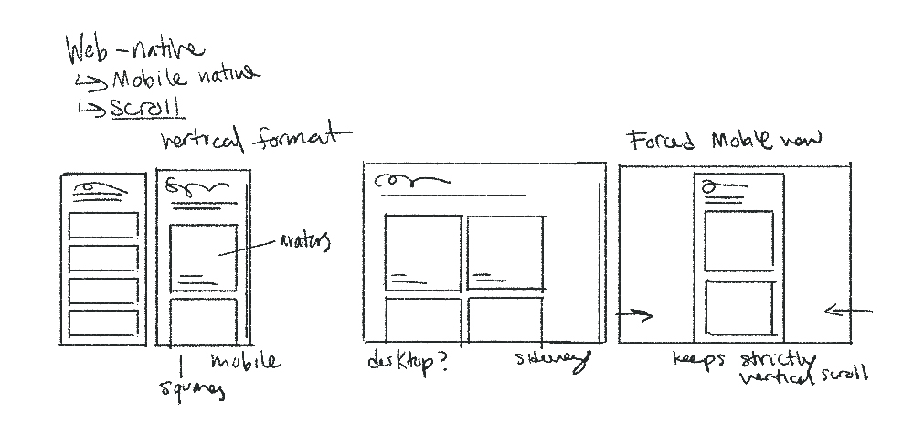

visit scrollform (in progress)
Recipient of the 2020 Fall Anderson Publishing Grant
Role-identity (the way someone views themselves as an acting entity in their own position) is based on both the actions a user consciously takes to present themselves and the inherent shaping of one's self into a format presentable online. For example, you can choose a display name, but what glyphs and how many characters are allowed in it shapes your ultimate decision. And then that display name is used by yourself and others, and your persona becomes attached to it. There are infinite points of shaping that occur on the web, where one uses the digital space to enhance a part of themselves in a way that couldn't be managed in person, or where one is limited by the specifications of the digital format and the templates of popular social media. The more one exists on the internet, a new mythology of identity occurs through evolving usernames, interests, aesthetics, friends, and information that begets itself unto a user, at a speed and consistency unprecedented to the offline. The "real" world cannot often keep up with the online identity, in its presentation, perception, and feedback loop.
The persona that takes space on the internet, that is acted out and translated through text and image and emoji and reshares, is entirely decided and curated by a living person who may live an entirely different type of life in the flesh. It is long form performance, collaboration, lie, and honesty beyond what one might ever be able to live outside the screen. I aim to explore that constructed role-identity through interview and collaboration with people who see a dividing line between their habitus on the internet, and off it.
"In the "real" world, the presence of the body is an absolute clue of existence. In the "digital" one, it is not because you are consulting a website that you do exist. Thus, a user has to take existence to communicate"
[Georges, 2009]"Through the fact that the user has to fill out repetitively subscription forms, a model of digital identity is progressively shaped or "informed" (in the etymological sense of informare "to shape"), influencing the cultural representation of the person"
[Turkle, 1995]Scrollform started as an independent research project, exploring the use of the internet as a reflection of one's self and create a digital experience to reflect my findings. Early on, I came across the work of Fanny Georges, who has written several papers on the interaction of identity and the web as an interface. One in particular, "Who are you doing? Declarative, Acting, and Calculated Identity in web 2.0," examined the process of different types of form-filling and how it constructed a new "digital hexis/habitus" (though specific to the UI of Facebook, and before 2016). They deconstructed the interface into three types of form filling, as listed in the title. These ways that you are guided to present yourself and interact with others then resolve into a persona.
I was further influenced by Krystal South's piece, "Identify Yourself," who discusses her relationship to the internet, and how her history with it has shaped her interactions and perceptions of others. This formed a basis for how I would carry out my research. The Internet, as a collective, can not be easily summarized nor quantified in an immediately relevant way, and neither can people's infinite possibilities of experiences with it. I decided to carry out an interview series, allowing people to share their stories of being Online, and who it has made them.
I started with a brief survey that people could fill out and share, so I could get a variety of interviews beyond my immediate scope. The survey included a brief synopsis of the concept behind the project, the final form it would take (published site and printed book), and what some of the initial interview questions would be. They filled out some preliminary thoughts and their background, and I reached out to individuals for interviews over text, specifically using Discord, as one could make anonymous accounts, and it was easily formattable with timestamps. Most interviews lasted between one and two hours, sharing their early, formative, and current experiences with the internet, and how they've grown with it.
"A user's image or name can be used to create an identity that they have no knowledge of. This second self, whether true identity theft or the appropriation of an avatar and name by a net bot, can generate its own content under your name, perpetuating an existence completely separate from you, and completely out of your control. This darker side to the control that we have over our internet identities can have impact on our offline lives."
[South, 2013]"The persona of an individual is rooted in the group. The persona exists for an audience, whether public or private, and gains context and meaning through its relationship, active or reactive, to this audience. The persona is not the inward self, but part of the public presence. It is the outward-facing schema of our identity."
[South, 2013]Most participants, when asked, said they used their phone to experience the web. From chatting to social media to browsing, their experience was based on scrolling through content to interact.
I wanted to maintain the web-native feel of the project, and contrary to my usual web design process, started by prioritizing the mobile view. Around 50% of Americans visit websites on a mobile device, so with the scroll function, I was trying to create a vertical, mobile experience.
visit scrollform 